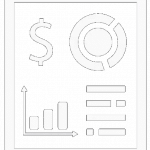

CLAIMS
Asesor cognitivo formado por diferentes módulos que pueden integrarse en procesos de negocio existentes proporcionando al usuario dictaminador de argumentos sólidos para dictaminar sin dejar de revisar todas las fuentes de información disponible
Ver mas...CODIFICAI
Hoy en los hospitales públicos y privados se realizan las labores de codificación dedicando más recursos humanos de los previstos; y la calidad de los datos obtenidos no se ajusta a los objetivos de las organizaciones de Salud.
Ver mas...
PAIMENTS
Proporcionar un asesor cognitivo que acoplado al proceso habitual de atención al cliente omnicanal, que mejore el tiempo y precisión de los agentes (humanos y bots) anticipando sus necesidades implícitas o respondiendo a sus preguntas explicitas.
Ver mas...


Secure Multi-Party Computation
El Aprendizaje Federado es un paradigma de Machine Learning destinado al aprendizaje de modelos a partir de datos descentralizados, tales como datos ubicados en los smartphones de los usuarios, en hospitales o en bancos, y garantizando la privacidad de los datos. Esto se logra entrenando los modelos localmente en cada nodo (por ejemplo, en cada hospital, en cada banco o en cada smartphone), compartiendo únicamente los parámetros actualizados en en cada nodo, (sin compartir los datos del usuario) y agregándolos de manera segura para construir un mejor modelo global.
Secure Multi-Party Computation
La Privacidad Diferencial es la técnica estadística que garantiza que ningún agente malintencionado pueda rastrear información individual hasta la fuente de datos. En Sherpa.ai conseguimos este objetivo, inyectando ruido con mecanismos Laplacianos, Gaussianos o Exponenciales. Esto hace que la información personal sea imposible de rastrear, garantizando que ningún dato individual pueda ser sometido a 'ingeniería inversa' y manteniendo la efectividad y precisión del algoritmo de predicción.
CLAIMS -
La tecnología más avanzada y completa del mercado para desarrollar Inteligencia Artificial
Ver mas...